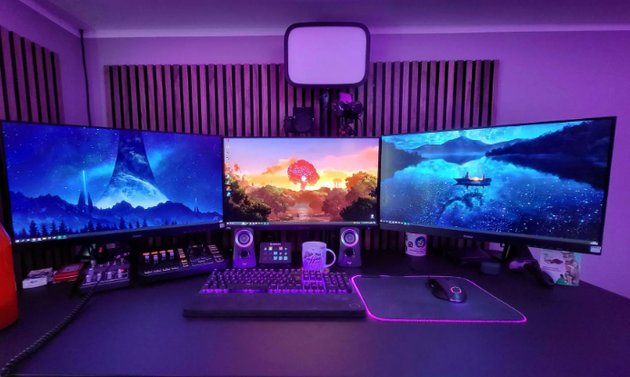
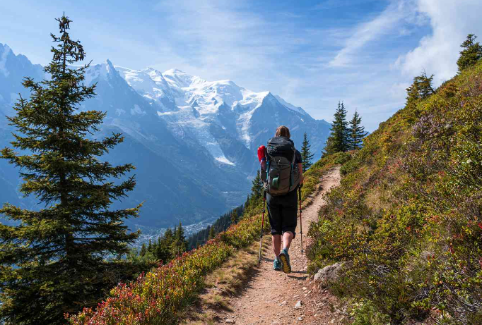
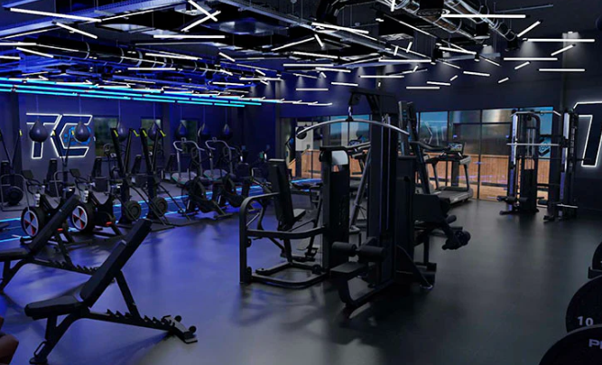
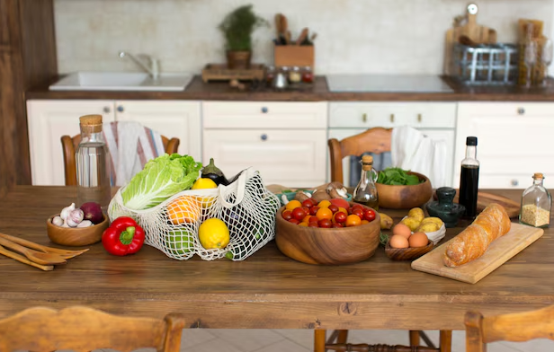

Here you can find out a little bit more about my hobbies as I believe this is one of the key aspects that form a personality
Much like books or movies, gaming opens a portal to countless fantasy worlds where you can be anyone or anything you want. Additionally it is a great way to relax or develop skills such as Problem-solving or logical thinking, it is up to you to decide
There is a common saying: "nature is the greatest artist". What can be better than to choose a path and just walk, observing the world around you. Not to mention how great it is for your health.
Gym is great way to take a break from your everyday life. Although primarily considered a place for body transformation, it is much more than that. Whenever I'm at the gym, my mind rests from everyday worries, the only thing that matters is the next set. I believe it is one of the best ways to train self-discipline.
The main purpose of food is to satisfy your hunger, but boy do I tell you, a well-prepared meal can get your day better. Whether do you want to treat yourself or somebody else, cooking is always a nice way express yourself. Not to mention that it is scientifically proven that cooking improves your motivation.
